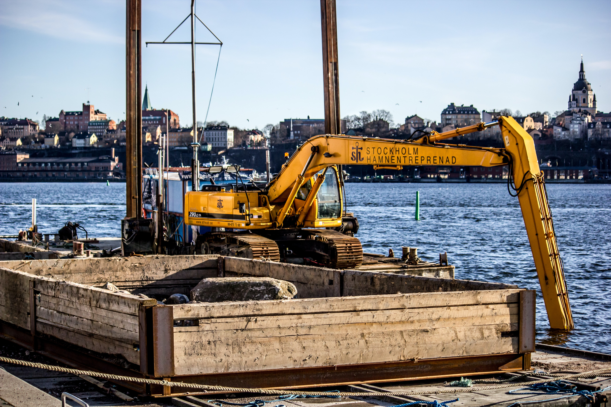

On the Forefront of Nutrient Credit Trading Using Oysters: Lessons Learned
Oysters are prolific filter feeders that remove light-blocking algae from bay waters and help remove excess nutrients, like nitrogen and phosphorus. More oysters equal better water quality.

Florida Skanska executive talks Tampa Bay construction and need for diversity
There’s a lot more prefabrication, especially using precast as opposed to cast in place of concrete, without getting overly technical.

District, Port Authority Partner to Improve McKay Bay
Three projects are expected to have a positive impact on the bay when they are completed.